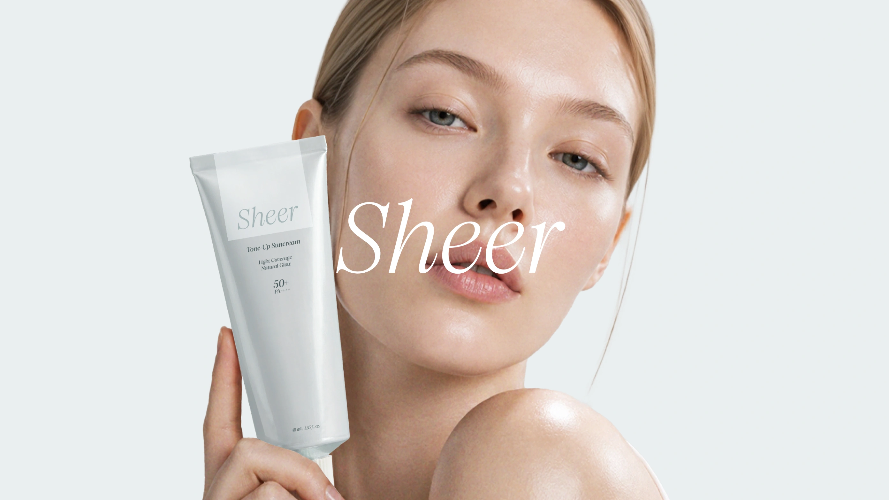
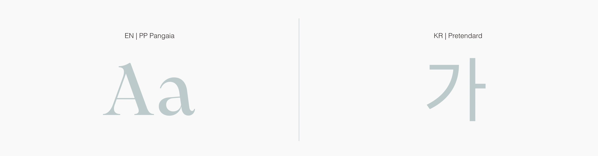
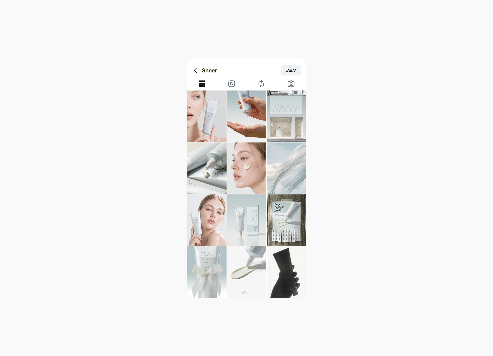
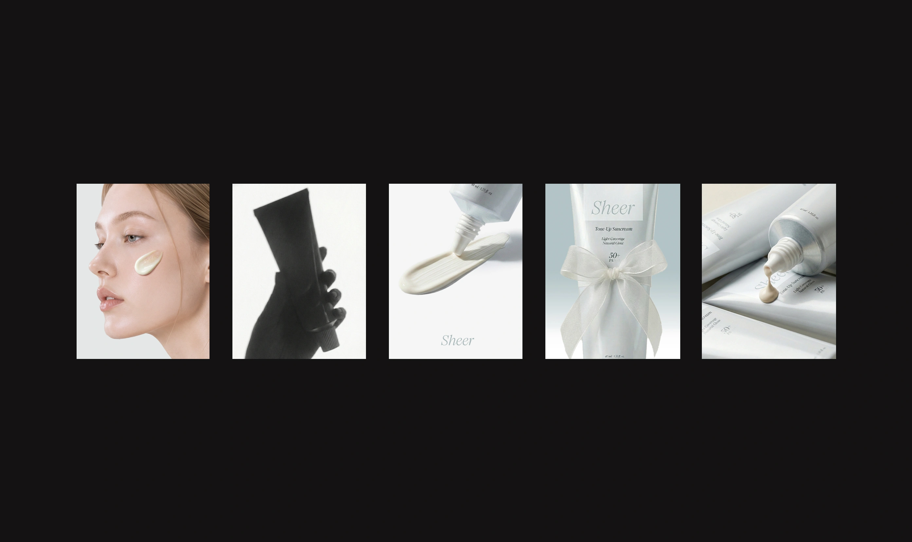
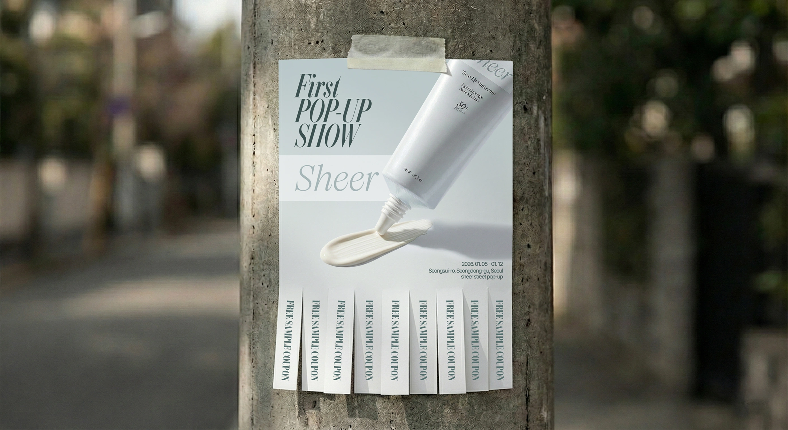
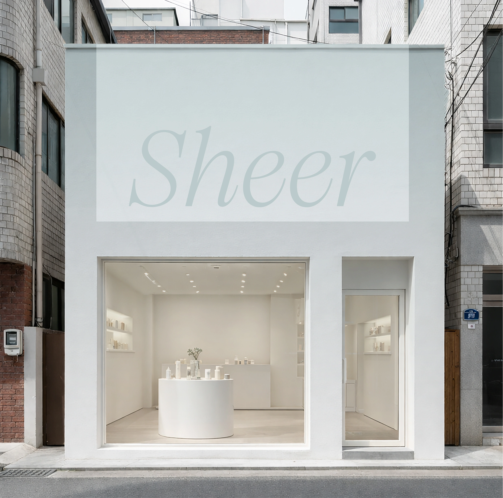

Sheer, BRAND EXPERIENCE, 2025
SHEER는 복잡한 뷰티 루틴을 덜어내고 가볍고 정제된 아름다움을 제안하는 데일리 코스메틱 브랜드입니다.
‘가볍게 한 겹이면 충분하다’는 슬로건 아래 톤업 선크림을 중심으로 여러 단계의 메이크업 없이도 자연스럽고
정돈된 인상을 완성할 수 있도록 설계했습니다. 가벼운 사용감과 절제된 비주얼을 통해 SHEER만의
섬세하고 고급스러운 브랜드 이미지를 전달합니다.





